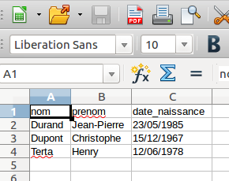

Premier format que nous allons étudier, le CSV (Comma separated values). Sur de nombreux sites, il est possible de télécharger des fichiers au format csv (nom_du_fichier.csv).
Voici ce que nous dit Wikipédia sur le format CSV :
Comma-separated values, connu sous le sigle CSV, est un format informatique ouvert représentant des données tabulaires sous forme de valeurs séparées par des virgules.
Un fichier CSV est un fichier texte, par opposition aux formats dits « binaires ». Chaque ligne du texte correspond à une ligne du tableau et les virgules correspondent aux séparations entre les colonnes. Les portions de texte séparées par une virgule correspondent ainsi aux contenus des cellules du tableau.
Voici un exemple du contenu d'un fichier CSV:
nom,prenom,date_naissance
Durand,Jean-Pierre,23/05/1985
Dupont,Christophe,15/12/1967
Terta,Henry,12/06/1978
Je pense qu'il est évident pour vous que nous avons ici 3 personnes :
ATTENTION :
La virgule est un standard pour les données anglo-saxonnes, mais pas pour les données aux normes françaises. En effet, en français, la virgule est le séparateur des chiffres décimaux. Il serait impossible de différencier les virgules des décimaux et les virgules de séparation des informations. C’est pourquoi on utilise un autre séparateur : le point-virgule (;). Dans certains cas cela peut engendrer quelques problèmes, vous devrez donc rester vigilants sur le type de séparateur utilisé.
Les tableurs, tels que "Calc" (Libre Office), sont normalement capables de lire les fichiers au format CSV. J'ai précisé "normalement" car certains tableurs gèrent mal le séparateur CSV "point-virgule" et le séparateur des chiffres décimaux "virgule".
Après avoir téléchargé le fichier ident_pointVirgule.csv, ouvrez ce dernier à l'aide d'un tableur.
Si par hasard votre tableur ne gère pas correctement le fichier avec le séparateur "point-virgule", voici une version "séparateur virgule" du fichier : ident_virgule.csv
Dans la suite, gardez toujours cet éventuel problème à l'esprit (surtout avec des données "made in France")
Vous devriez obtenir ceci :
Vous pouvez constater que les données sont bien "rangées" dans un tableau avec des lignes et des colonnes (voilà pourquoi on parle de données tabulaires.
Il est possible de trouver sur le web des données beaucoup plus intéressantes à traiter que celles contenues dans le fichier "ident_pointVirgule.csv" (ou "ident_virgule.csv"). Par exemple, le site sql.sh, propose un fichier csv contenant des informations sur l'ensemble des communes françaises.
Ouvrez le fichier ville_point_virgule.csv à l'aide d'un tableur (c’est une version légèrement modifiée de celle disponible sur le site sql.sh, j’y ai notamment ajouté des entêtes). En cas de problème avec votre tableur, voici une version "séparateur virgule" : ville_virgule.csv (attention le séparateur "décimal" est ici le point)
Comme vous pouvez le constater, nous avons 12 colonnes (et 36700 lignes si on ne compte pas l'entête !), voici la signification de ces colonnes :
Vous trouverez un grand nombre de données, diverses et variées, au format CSV sur le site gouvernemental data.gouv.fr.
Il existe aussi un format très voisin du CSV, le TSV (Tab-separated values) où le séparateur est une tabulation (touche avec le symbole ↹)